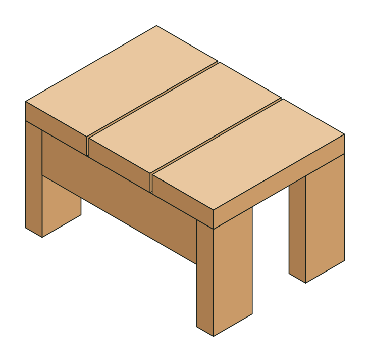
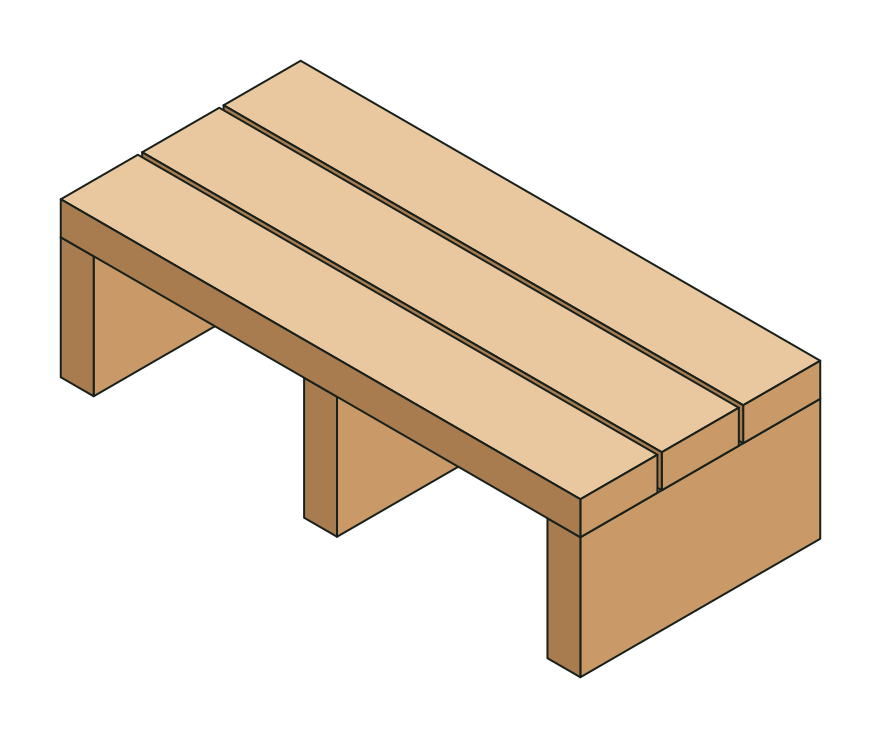
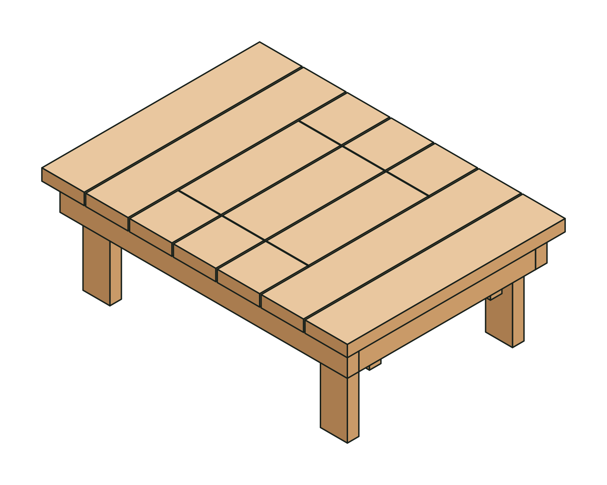
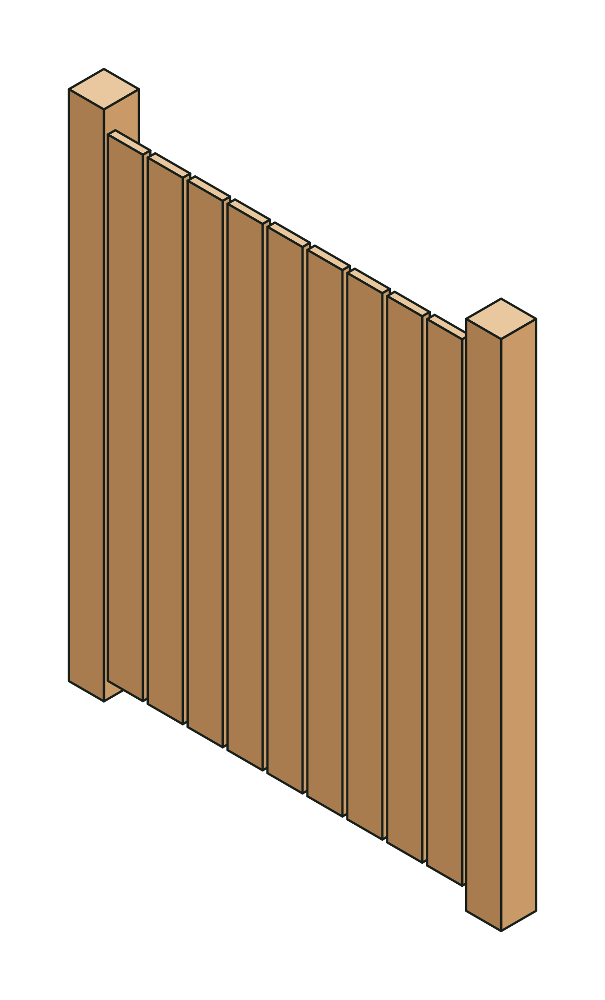
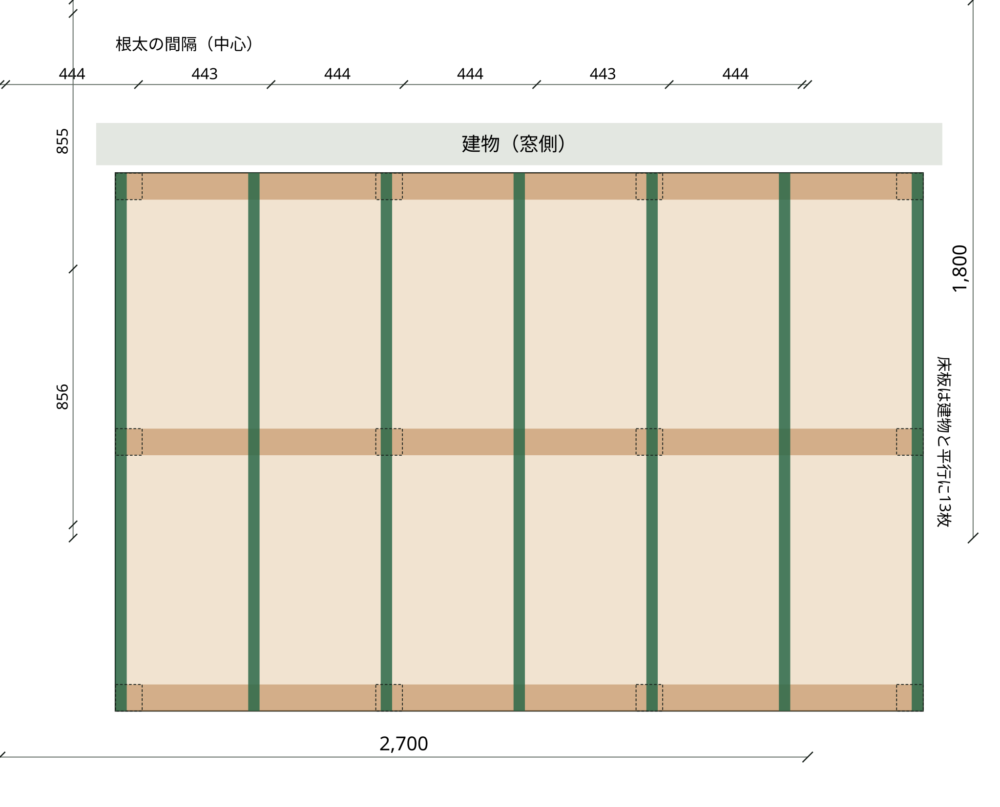

STEP1 無料
踏み台
さしがねで直角の線を引く、まっすぐ切る、下穴をあけてビスで留める、対角線で直角を確かめる。
ウッドデッキでは：すべての作業の基本。完成した踏み台は、デッキの昇り口のステップになる。
材料費 約2,600円時間 半日材料 2×4材・2×6材 各1本
踏み台から始めて、プランター台、囲炉裏テーブル、木製門扉。そして卒業制作は、家族が集まるウッドデッキ。建設の仕事を35年続けてきた監修者が、一歩ずつ案内します。

1踏み台
2プランター台
3囲炉裏テーブル
4木製門扉
卒業制作ウッドデッキDIYをためらう理由として多いのは「工具がない」「失敗したくない」「手順がわからない」「相談できる人がいない」。この講座は、小さな作品で一つずつ答えていきます。
STEP1は、ノコギリとドライバーがあれば始められます。ホームセンターのカットサービスを使えば、切る作業なしでも組み立てられます。
最初の材料費は約2,600円。失敗しても、余った材料で作り直せます。小さな成功を重ねてから大物へ進みます。
どのステップも、寸法入りの図面、カット表、立体図つきの手順、できあがりチェックがそろっています。
卒業制作のウッドデッキには、180日間のメール・LINEサポートがつきます。計画図や材料の計算も一緒に確かめます。
各ステップで覚える作業は、どれもウッドデッキづくりでそのまま使います。つくった作品は、完成したデッキのまわりで活躍します。
さしがねで直角の線を引く、まっすぐ切る、下穴をあけてビスで留める、対角線で直角を確かめる。
ウッドデッキでは：すべての作業の基本。完成した踏み台は、デッキの昇り口のステップになる。
根太を等しい間隔で並べ、5mmのすき間ゲージで板を張り、ビスを一直線にそろえる。板とすき間から全体の寸法を決める「割付け」も覚える。
ウッドデッキでは：床板張りとまったく同じつくり。プランター台は、デッキを小さく切り取ったもの。
幕板で四角い枠を組んで直角を出し、脚で水平をとり、受け材で開口部をつくる。炭火用と、カセットコンロ・飾り炉用のどちらにも対応。
ウッドデッキでは：骨組み（大引・根太）と点検口のつくり。完成したデッキの上で、家族や友人と囲める。
穴を掘ってコンクリートで柱を建て、2つの方向から垂直を出す。筋交いで扉の垂れを防ぎ、蝶番・ラッチを取り付ける。
ウッドデッキでは：基礎（束石・束柱）の作業そのもの。デッキではこれを十数か所くり返す。
ここまでで、ウッドデッキに必要な作業はすべて経験ずみ。
あなたの家のサイズで材料と費用を計算し、サイズ別の図面（基礎伏図・骨組み図・断面図・カット表・購入リスト・3日間の手順）で組み立てる。180日間のサポートつき。
業者に頼むと1㎡あたり4万円〜が相場。自分でつくれば、材料費だけで済みます。
どのステップからでも始められます。すべての教材に、図面・カット表・材料リスト・手順・できあがりチェックがつきます。
| ステップ | 内容 | 価格 |
|---|---|---|
| STEP1 踏み台 | 教材PDF 6ページLINEに登録すると受け取れます | 無料 |
| STEP2 プランター台 | 教材PDF 6ページ | 980円 |
| STEP3 囲炉裏テーブル | 教材PDF 7ページ（炭火・カセットコンロ両対応） | 1,980円 |
| STEP4 木製門扉 | 教材PDF 7ページ | 1,980円 |
| STEP2〜4 セット | 3つの教材をまとめて単品で買うより 960円おトク | 3,980円 |
サポートを受けながら180日間取り組んでも完成しなかった場合は、代金を全額お返しします。
唯一つまづきかけた（挫折しかけた）のは、材料調達の計算でしたが、親切に何度も相談に乗ってくれて、しかも計算間違いなどがないか検証までしてくれたのです。
部屋から庭までの高さが１メートルあり、どう作ったらいいのか答えが出なくなりました。そこでアドバイスと計画図を提供してくれて二段デッキにすることでスタートすることになりました。
いただいた感想から一部を抜粋しています。個人の感想です。
STEP1に必要なのは、さしがね・メジャー・ノコギリ・インパクトドライバー（またはドライバードリル）です。木材はホームセンターのカットサービスで切ってもらうこともできます。教材の「道具と材料」のページに、必要なものをチェックリストでまとめています。
はい。どのステップも単品で使えます。ただ、STEP2はSTEP1で余った材料を使う設計なので、順番に進めると材料のムダが出ません。
STEP1〜3は1人でできます。STEP4の柱を建てる作業と、ウッドデッキの床板張りは、2人いると楽です。
STEP1〜3は、ベランダや庭のない家でもつくれます。囲炉裏テーブルは、カセットコンロ・飾り炉タイプにすれば炭火を使いません。炭火は屋外だけで使ってください。
A4のPDFです。スマートフォンで見ながら作業しても、印刷して現場に持って行っても使えます。ウッドデッキ完成コースのマニュアルは、B5の印刷版もお届けします。
大きさと木材によって、約10〜30万円です。無料の計算ツールで、幅・奥行き・高さを入れると、材料の本数と費用の目安がわかります。